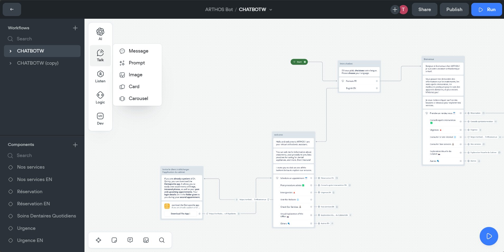

Contexte initial
Inspiré par une expérience réussie lors de la création d'un chatbot Télégramme sous la
direction du très compétent Nathanaël et d’une très bonne documentation qu'il a fournis, j'ai pensé qu’il
était
possible de réaliser cela avec WhatsApp et donc après quelques recherches, j’ai initialement opté pour Python
et Flask, utilisant des extensions WhatsApp et Ngrok. (Ngrok permet de rendre le chatbot accessible depuis
WhatsApp alors qu’on travaille en local, ce qui facilite considérablement le développement et les phases de
test avant un éventuel déploiement.)
Problématiques rencontrées
Rapidement, des complications ont surgi, principalement dues aux restrictions
sévères de WhatsApp concernant l'accès à son code et à ses outils internes. WhatsApp limite l'intégration
directe de chatbots personnalisés via son API, imposant des règles strictes et des processus de vérification
rigoureux.

Solution adoptée
Face à ces contraintes, j'ai décidé d'abandonner le développement direct sur WhatsApp et
de me tourner vers Voiceflow, qui, bien que limité, offrait une intégration via l'API WhatsApp Business dans
un cadre plus structuré et sécurisé.

Objectifs et premiers pas
Le choix de Voiceflow pour le développement du chatbot a été guidé par sa
facilité d'utilisation et sa compatibilité avec WhatsApp. J'ai donc entrepris la création de flux de
conversation intuitifs grâce à
un système de glisser-déposer. J'ai intégré des médias tels que des images
pour enrichir l'expérience utilisateur. De plus, j'ai utilisé des variables pour personnaliser les réponses et
suivre l'état de la conversation. J'ai également intégré des APIs externes pour enrichir les fonctionnalités
du chatbot.

Intégration de l'IA
Voiceflow permet d'incorporer une intelligence artificielle avancée, offrant des
fonctionnalités telles que l'ajustement du nombre de mots dans les réponses et la modulation de l'intensité de
la réponse selon le contexte.
Personnalisation avancée
L'IA de Voiceflow a été configurée pour répondre de manière dynamique et
personnalisée aux interactions des utilisateurs, permettant une expérience utilisateur plus riche et engagée.
Les capacités de l'IA ont été exploitées pour simuler une conversation naturelle, ajustant les réponses en
fonction des inputs reçus pour mieux servir les besoins des patients du cabinet.